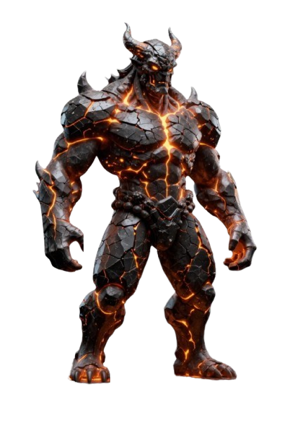

🌋 ЛАВОВЫЙ ТИТАН
HP 14 200 / 19 000

📋 Лавовый Титан — что собрано
Фон-водопад
— лавовый поток в каньоне (
bg/lava.png
)
Мерцание лавы
— brightness ±15% + hue-rotate ±3° за 3.2с (живой огонь)
Босс на камнях
— bottom 8%, спина перед водопадом
Rim light
— 2-слойный
drop-shadow #ff5520
пульсирует синхронно с фоном (3.2с) — свет водопада на броне
Медленное дыхание
— scale 1→1.03 за 4.2с (тяжесть титана)
Маска ног
— нижние 22% растворяются в туман
Heat haze
z:8
— backdrop-blur(.7px) + skew над ВСЕЙ сценой, маска сверху → плавный край
18 искр
— медленные 7–9с, 3 размера (оранжевые/жёлтые/красные)